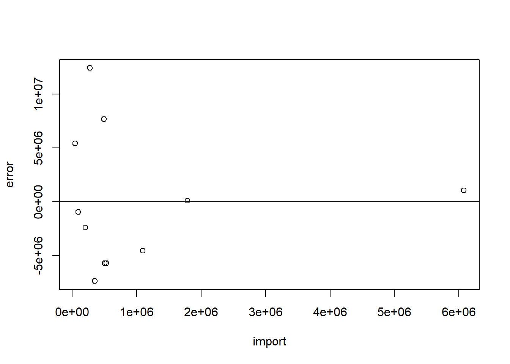
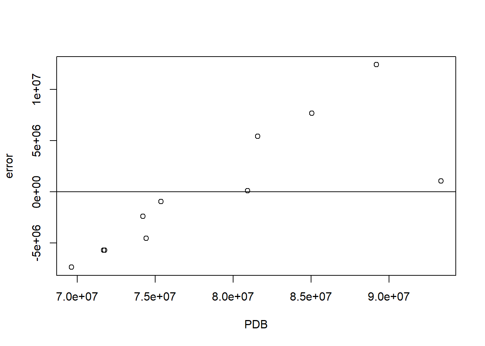

library(tidyverse)
library(readxl)Pengaruh Impor Pakaian Bekas Terhadap PDB Industri Tekstil dan Pakaian Jadi di Indonesia
Metode Penelitian Politeknik APP Jakarta

1 Pendahuluan
1.1 Latar belakang
Pada dasarnya setiap manusia memiliki kebutuhan untuk hidup yang tidak terbatas dan beragam. Jika ditinjau dari kepentingannya, yaitu kebutuhan primer, sekunder, dan tersier. Kebutuhan primer merupakan kebutuhan utama atau kebutuhan pokok yang meliputi sandang (pakaian), pangan (makan dan minum), dan papan (tempat tinggal). Pakaian adalah salah satu kebutuhan yang penting bagi manusia untuk menutupi dan melindungi tubuhnya. Selain itu, pakaian juga berfungsi sebagai penunjang gaya hidup manusia agar dapat tampil percaya diri dan menarik. Setiap manusia memiliki gaya hidup mereka masing-masing, namun tidak sedikit juga manusia yang lebih mementingkan kenyamanan dibandingkan penampilan (Hanifah, 2022).
Jepang dan Korea Selatan adalah contoh dari negara yang menjadi trendsetter dalam dunia mode. Hal ini dikarenakan cara berpakaian yang memiliki ciri-ciri yang khas, unik, dan lucu sehingga remaja menyukai gaya tersebut (Muiz et al., 2023) . Tidak hanya menjadi trendsetter, Jepang juga menjadi salah satu importir pakaian bekas terbesar bagi Indonesia. Hal tersebut membuat keresahan bagi para stakeholder industri mode serta pemerintah akan pertumbuhan dan kestabilan industri tekstil dan pakaian jadi di Indonesia.
1.2 Ruang lingkup
Dalam penelitian ini penulis mengambil objek penelitian bersumber pada Badan Pusat Statistik dan Trademap. Pada penelitian ini terdapat 2 variabel meliputi nilai impor pakaian bekas dan nilai Produk Domestik Bruto (PDB) industri tekstil dan pakaian jadi Indonesia. Data yang digunakan adalah data yang bersifat time series dengan kurun waktu 11 tahun yaitu 2012-2022 serta dengan satuan yang telah diubah kedalam US Dollar dengan tujuan memudahkan penyetaraan mata uang.
1.3 Rumusan masalah
Berdasarkan dengan latar belakang di atas, maka yang menjadi pokok masalah pada penelitian ini sebagai berikut.
- Apakah impor pakaian bekas memengaruhi PDB tekstil dan pakaian jadi di Indonesia?
- Apakah dengan adanya larangan impor pakaian bekas akan meningkatkan PDB tekstil dan pakaian jadi di Indonesia?
1.4 Tujuan dan manfaat penelitian
Penelitian ini bertujuan untuk memberikan pengetahuan mengenai pengaruh impor pakaian bekas kepada PDB tekstil dan pakaian jadi. Selain itu, penelitian ini juga diharapkan dapat memperluas wawasan pembaca dalam bidang ekonomi.
Adapun manfaat dari penelitian sebagai berikut.
1. Manfaat Teoritis
Sebagai bahan untuk meningkatkan pengetahuan di bidang ekonomi terkhusus industri tekstil.
2. Manfaat Praktis
a. Bagi Penulis
Mengimplementasikan teori dan ilmu yang telah didapatkan selama dalam perkuliahan ilmu ekonomi serta metodologi penelitian.
b. Pihak lain
Sebagai dasar pemikiran untuk penelitian selanjutnya, baik peneliti sendiri maupun peneliti-peneliti lainnya. Serta diharapkan bermanfaat bagi pembaca untuk mempelajari hubungan impor dengan PDB pada suatu industri dengan industri tekstil sebagai topik penelitian ini.
1.5 Package
Packages yang digunakan sebagai penunjang Ordinary Least Square (OLS) dalam penelitian ini antara lain sebagai berikut:
2 Studi pustaka
- Impor
Impor merupakan suatu proses transportasi barang atau komoditas dari suatu negara ke negara lain secara legal, umumnya terjadi dalam proses perdagangan. Menurut Undang-undang nomor 17 tahun 2006 pasal 2, barang impor adalah barang yang dimasukkan ke dalam daerah pabean. Impor dapat menurunkan pendapatan nasional pada keseimbangan dan menimbulkan masalah-masalah ekonomi yang akan dihadapi negara (Hodijah & Angelina, 2021). Namun, disisi lain impor juga menguntungkan bagi negara. Impor memungkinkan pengusaha untuk mendapatkan produk dengan harga yang lebih kompetitif dari pasar internasional. Impor juga sangat berguna untuk memastikan ketersediaan kebutuhan negara akan barang dan jasa yang tidak dapat diproduksi secara efisien atau ekonomis di dalam negeri tercukupi.
- Produk Domestik Bruto (PDB)
Produk Domestik Bruto dapat diartikan sebagai nilai keseluruhan akan semua barang dan jasa yang diproduksi di dalam wilayah tersebut dalam jangka waktu tertentu (umumnya per tahun). PDB merupakan salah satu metode yag sering digunakan untuk menghitung pendapatan nasional. Berbeda dengan Produk Nasional Bruto, PDB menghitung total produksi dari suatu negara tanpa mempertimbangkan apakah produksi itu dilakukan dengan memakai faktor produksi dalam negeri atau tidak. Rumus umum untuk PDB adalah:
\[ PDB= konsumsi + investasi + pemerintah + (ekspor-impor) \]Dimana konsumsi adalah pengeluaran yang dilakukan oleh rumah tangga, investasi oleh sektor usaha, pemerintah merupakan pengeluaran oleh pemerintah, serta ekspor dan impor melibatkan sektor luar negeri.
3 Metode penelitian
3.1 Data
| Tahun | Nilai PDB (Y) | Nilai Impor (X) |
|---|---|---|
| 2012 | 69.623.839 | 353.000 |
| 2013 | 74.207.808 | 203.000 |
| 2014 | 75.366.605 | 93.550 |
| 2015 | 71.755.769 | 525.120 |
| 2016 | 71.691.747 | 504.200 |
| 2017 | 74.431.885 | 1.091.780 |
| 2018 | 80.930.110 | 1.790.440 |
| 2019 | 93.343.961 | 6.075.440 |
Penelitian ini menggunakan data sekunder yang berbentuk time series 2012-2022, data yang digunakan merupakan data dalam bentuk US Dollar yang telah diolah bersumber dari Badan Pusat Statistika.
setwd('C:/KULIAH/METOPEL/Artikel')
library('readxl')
dat<-read_excel('data1.xlsx')
View(dat)
reg1<-lm(PDB~import,data=dat)
dat$m<-resid(reg1)
plot(dat$import,dat$m,xlab = "import",ylab = "error")
abline(h=0)
Plot pengaruh error terhadap nilai impor pakaian bekas.
plot(dat$PDB,dat$m,xlab = "PDB",ylab = "error")
abline(h=0)
Plot pengaruh error terhadap nilai PDB industri tekstil dan pakaian jadi.
3.2 Metode analisis
Metode yang dipilih dalam penelitian ini adalah Ordinary Least Square (OLS) dengan 1 variabel independen. Selain itu teknik analisis yang digunakan yaitu kuantitatif deskriptif. Penelitian ini bermaksud untuk mencari hubungan antara impor (X) dengan PDB. Spesifikasi yang dilakukan adalah:
\[ Y=\beta_0 + \beta_1 X+\mu \]Di mana \(Y\) adalah produk domestik bruto (PDB) dan \(X\) adalah nilai impor.
4 Pembahasan
4.1 Pembahasan masalah
Pembahasan atas penelitian ini hanya menghubungkan Nilai Impor pakaian bekas dengan PDB industri tekstil dan pakaian jadi dikarenakan penggunaan OLS. Berikut data yang diregresikan.
setwd('C:/KULIAH/METOPEL/Artikel')
library('readxl')
dat<-read_excel('data1.xlsx')
head(dat, n = 11)# A tibble: 11 × 3
year PDB import
<dbl> <chr> <dbl>
1 2012 69623839 353000
2 2013 74207808 203000
3 2014 75366605 93550
4 2015 71755769 525120
5 2016 71691747 504200
6 2017 74431885 1091780
7 2018 80930110 1790440
8 2019 93343961 6075440
9 2020 85053122 493980
10 2021 81583134 44140
11 2022 89201742 2721504.2 Analisis masalah
Berikut hasil regresi pada data:
reg1<-lm(PDB~import,data=dat)
summary(reg1)
Call:
lm(formula = PDB ~ import, data = dat)
Residuals:
Min 1Q Median 3Q Max
-7374702 -5121393 -938848 3234148 12419181
Coefficients:
Estimate Std. Error t value Pr(>|t|)
(Intercept) 7.606e+07 2.342e+06 32.471 1.23e-10 ***
import 2.671e+00 1.194e+00 2.237 0.0521 .
---
Signif. codes: 0 '***' 0.001 '**' 0.01 '*' 0.05 '.' 0.1 ' ' 1
Residual standard error: 6585000 on 9 degrees of freedom
Multiple R-squared: 0.3574, Adjusted R-squared: 0.286
F-statistic: 5.006 on 1 and 9 DF, p-value: 0.05206Berikut ini adalah bentuk tabel dari hasil regresi tersebut.
| Variabel | Coefficient | Std. Error | t-value | Prob |
|---|---|---|---|---|
| Intercept | 7.606e+07 | 2.342e+06 | 32.471 | 1.23e-10 |
| Import | 2.671e+00 | 1.194e+00 | 2.237 | 0.0521 |
| R-squared | 0.3574 | |||
| Adjusted R-squared | 0.286 | |||
| F-Statistic | 5.006 | |||
| Prob (F-statistic) | 0.05206 |
Hasil dari regresi dimasukkan ke dalam rumus persamaan yang digunakan sehingga menjadi:
\[ Y=7.606 + 2.672 X \]Kegiatan ekspor-impor berpengaruh pada pertumbuhan ekonomi. Impor sangat bergantung pada produk domestik bruto, karena ia adalah salah satu sumber pembiayaan impor. Impor tidak terlalu berpengaruh kepada PDB. Namun, jika impor terlalu tinggi maka PDB akan menurun. Jika melihat pada hasil regresi dapat diasumsikan setiap kenaikan impor 1 maka PDB akan meningkat sebesar 2.672. Hal ini dikarenakan dari hasil regresi tersebut terbukti bahwa impor pakaian bekas dan PDB industri tekstil dan pakaian jadi memiliki hubungan yang positif.
5 Kesimpulan
Berdasarkan penelitian yang telah dilakukan, dapat disimpulkan bahwa:
- Impor pakaian bekas tidak terlalu mempengaruhi PBD industri tekstil dan pakaian jadi. Impor dan PDB pada penelitian ini memiliki hubungan yang positif.
- Larangan terhadap impor pakaian bekas itu sendiri telah diresmikan sejak tahun 2015 yaitu dalam Peraturan Menteri Perdagangan Nomor 51/M-DAG/PER/7/2015 tentang Larangan Impor Pakaian Bekas. Jika kita lihat kembali pada tabel data nilai impor dan PDB, impor pakaian bekas tetap dilakukan, bahkan terjadi peningkatan drastis pada tahun 2019. Dengan ini terbukti kalau larangan impor pakaian bekas tidak berpengaruh pada impor itu sendiri. Akan tetapi, impor ini tidak terlalu berpengaruh pada PDB, oleh karena itu PDB tetap meningkat didukung oleh faktor-faktor lain.
- Perlu dicatat bahwa data-data diatas mungkin belum merepresentasikan fakta secara lengkap. Besar kemungkinan terjadinya impor pakaian bekas yang menggunakan cara ilegal sehingga nilainya tidak tercatat.
6 Referensi
Budiyanti, E. (2023). Dampak Negatif Impor Pakaian Bekas Terhadap Perekonomian. Pusat Penelitian Badan Keahlian DPR RI, 17(6), 11–15.
Dewi, N. M. I. K., Widiati, I. A. P., & Sutama, I. N. (2020). Implikasi Penjualan Pakaian Bekas Impor bagi Konsumen di Kota Denpasar. Jurnal Interpretasi Hukum, 1(1), 216–221. https://doi.org/10.22225/juinhum.1.1.2222.216-221
Fatah, A., Sari, D. A. P., Irwanda, I. S., Kolen, L. I., & Agnesia, P. G. D. (2023). Pengaruh Larangan Impor Pakaian Bekas Terhadap Pengusaha Thrift. Jurnal Economina, 2(1), 1321–1328. https://doi.org/10.55681/economina.v2i1.288
Hanifah, U. (2022). Pengaruh Ekspor Dan Impor Terhadap Pertumbuhan Ekonomi Di Indonesia. Transekonomika: Akuntansi, Bisnis Dan Keuangan, 2(6), 107–126. https://doi.org/10.55047/transekonomika.v2i6.275
Hodijah, S., & Angelina, G. P. (2021). Analisis Pengaruh Ekspor dan Impor Terhadap Pertumbuhan Ekonomi di Indonesia. Jurnal Manajemen Terapan Dan Keuangan (Mankeu), 10(1), 53–62. https://doi.org/10.22437/jmk.v10i01.12512
Muiz, A. N., Fajar, W. L., & Rahayu, R. (2023). Dampak Impor Pakaian Bekas Terhadap Kestabilan Industri Tekstil dan Produk Tekstil di Indonesia. BUSINESS: Scientific Journal of Business and Entrepreneurship, 1(2), 109–117.
Sadya, S. (2023a). Impor Pakaian Bekas Indonesia Mencapai 26,22 Ton pada 2022. DataIndonesia.Id. https://dataindonesia.id/industri-perdagangan/detail/impor-pakaian-bekas-indonesia-mencapai-2622-ton-pada-2022
Sadya, S. (2023b). Kinerja Industri Tekstil Meningkat 9,34% pada 2022. DataIndonesia.Id. https://dataindonesia.id/industri-perdagangan/detail/kinerja-industri-tekstil-meningkat-934-pada-2022